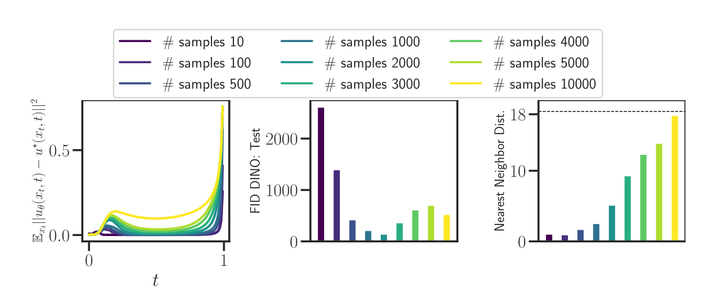
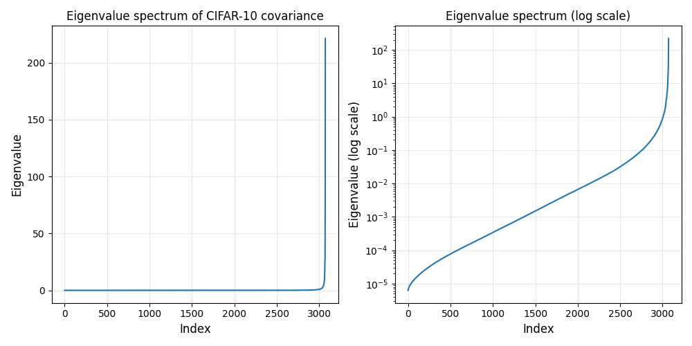

Flow Matching (FM) learns a time-dependent velocity field transporting a simple source distribution to a target data distribution. In the Gaussian optimal-transport interpolation, and when the target distribution is replaced by the empirical training distribution, the exact marginal velocity field has a closed form: it is a softmax-weighted average over the training examples.
In high dimension, this softmax often becomes almost one-hot very early along the interpolation path. I will refer to this phenomenon as softmax collapse. Once collapse occurs along a trajectory generated from a training example, the marginal velocity field becomes nearly equal to the conditional velocity field associated with that example. In other words, the exact empirical FM vector field behaves like a nearest-neighbor decoder, which helps explain why the empirical flow tends to memorize the training set.
The main point of this post is that this collapse has a simple mathematical interpretation. Along a planted trajectory, the closed-form softmax weights are exactly the posterior distribution over the training index in a finite Gaussian codebook model. The interpolant contains a noisy observation of the endpoint image, and the softmax answers the question:
Which training point most likely generated this interpolant?
Thus softmax collapse is a posterior concentration or decoding phenomenon. In an isotropic Gaussian proxy for CIFAR-10, the critical time is obtained by comparing the information contained in the interpolant to the entropy of the training index:
\[ \frac{\log n}{d} = \frac12 \log\left(1+\sigma^2\left(\frac{t_C}{1-t_C}\right)^2\right). \]
Equivalently,
\[ \boxed{ t_C = \frac{ \sqrt{(e^{2\alpha}-1)/\sigma^2} }{ 1+\sqrt{(e^{2\alpha}-1)/\sigma^2} }, \qquad \alpha=\frac{\log n}{d}. } \]
For the CIFAR-10 proxy
\[ d=3072, \qquad n=50{,}000, \qquad \sigma^2\approx 0.24, \]
this gives
\[ \boxed{t_C\approx 0.146.} \]
This value should not be read as a universal constant for CIFAR-10. It is the prediction of a simplified Gaussian model. But it has the right order of magnitude: it places the onset of posterior concentration around the same early-time regime in which empirical studies observe high correlation between the marginal and conditional velocity fields.
This post is organized as follows. We first recall the closed-form marginal velocity field for empirical Gaussian-OT Flow Matching. We then rewrite its softmax weights as a posterior distribution. This gives a clean mathematical derivation of the collapse time in an isotropic Gaussian proxy and a log-determinant generalization for non-isotropic covariance. Finally, we connect this posterior concentration picture to the observed learning difficulties of neural velocity fields across time.
Throughout the post, all logarithms are natural logarithms.
Setup and Notation
We follow the standard Flow Matching setup of Lipman et al. (2024). Let the source distribution be
\[ p_0 = \mathcal N(0,I_d), \]
and let the target distribution be an unknown data distribution \(q\) on \(\mathbb R^d\). Flow Matching defines a probability path \((p_t)_{0\leq t\leq 1}\) connecting \(p_0\) to \(q\) and learns a time-dependent velocity field
\[ u : [0,1]\times \mathbb R^d \to \mathbb R^d. \]
The velocity field generates a flow map \(\psi_t\) through the ODE
\[ \frac{d}{dt}\psi_t(x)=u_t(\psi_t(x)), \qquad \psi_0(x)=x. \]
If \(X_0\sim p_0\), then \(X_t=\psi_t(X_0)\) should have law \(p_t\). In particular, \(X_1\) should have approximately the data distribution.
Gaussian-OT conditional paths
A common Flow Matching path is obtained by interpolating linearly between noise and data:
\[ X_t=(1-t)X_0+tX_1, \qquad X_0\sim \mathcal N(0,I_d), \qquad X_1\sim q. \]
Conditioned on a fixed endpoint \(X_1=x_1\), the conditional distribution of \(X_t\) is
\[ p_{t\mid x_1}(x) = \mathcal N\bigl(x\mid t x_1,(1-t)^2I_d\bigr). \]
The associated conditional velocity field is
\[ u_t(x\mid x_1)=\frac{x_1-x}{1-t}. \]
Evaluated along the interpolant \(X_t=(1-t)X_0+tX_1\), this becomes
\[ u_t(X_t\mid X_1) = \frac{X_1-X_t}{1-t} =X_1-X_0. \]
This is the target used in the usual conditional Flow Matching objective:
\[ \mathcal L_{\mathrm{CFM}}(\theta) = \mathbb E_{t,X_0,X_1} \left[ \left\|u_t^\theta(X_t)-(X_1-X_0)\right\|^2 \right], \qquad X_t=(1-t)X_0+tX_1. \]
The marginal velocity field is the conditional expectation
\[ u_t(x)=\mathbb E[X_1-X_0\mid X_t=x]. \]
Thus the conditional objective trains against an unbiased target for the marginal velocity field, up to the usual irreducible conditional variance.
Let
\[ Y=X_1-X_0, \qquad \bar Y(X_t)=\mathbb E[Y\mid X_t]=u_t(X_t). \]
Then
\[ \begin{aligned} \mathbb E\left[\|u_t^\theta(X_t)-Y\|^2\right] &= \mathbb E\left[\|u_t^\theta(X_t)-\bar Y(X_t)\|^2\right] +\mathbb E\left[\|Y-\bar Y(X_t)\|^2\right]. \end{aligned} \]
The second term is independent of \(\theta\) and equals the conditional variance of the target. Hence minimizing the conditional Flow Matching loss has the same minimizers, and the same gradients, as minimizing the marginal Flow Matching loss.
The Closed-Form Empirical Marginal Velocity
In practice, we observe a finite training set
\[ x^{(1)},\dots,x^{(n)}\in\mathbb R^d, \]
and replace the target distribution \(q\) by the empirical distribution
\[ \widehat q = \frac1n\sum_{i=1}^n\delta_{x^{(i)}}. \]
For the Gaussian-OT path, the marginal density is then a Gaussian mixture:
\[ p_t(x) = \frac1n\sum_{i=1}^n \mathcal N\bigl(x\mid t x^{(i)},(1-t)^2I_d\bigr). \]
The exact marginal velocity field is
\[ \boxed{ u_t(x) = \sum_{i=1}^n \lambda_i(x,t)\frac{x^{(i)}-x}{1-t}, } \]
where
\[ \boxed{ \lambda_i(x,t) = \frac{ \exp\left(-\frac{\|x-tx^{(i)}\|^2}{2(1-t)^2}\right) }{ \sum_{j=1}^n \exp\left(-\frac{\|x-tx^{(j)}\|^2}{2(1-t)^2}\right) }. } \]
These weights are posterior probabilities under the empirical mixture model. They are also the source of the collapse phenomenon studied in Bertrand et al. (2025).
At \(t=0\), all mixture components have the same mean \(0\) and covariance \(I_d\), so the weights are exactly uniform:
\[ \lambda_i(x,0)=\frac1n. \]
As \(t\) increases, the component means \(t x^{(i)}\) separate. In high dimension, this separation can make the posterior over components concentrate very quickly.
Empirical Motivation
The empirical observations in Bertrand et al. (2025) motivate the mathematical analysis below.

Figure Figure 1 shows that, on CIFAR-10, the marginal velocity field becomes highly aligned with the conditional velocity field already for small values of \(t\). This suggests that the empirical posterior over training samples becomes concentrated along typical data-generated trajectories.

Figure Figure 2 shows a strong dimension effect: increasing the ambient dimension moves the alignment transition toward earlier times. This is consistent with the formula derived later, where the relevant ratio is
\[ \alpha=\frac{\log n}{d}. \]
For fixed dataset size \(n\), increasing \(d\) decreases \(\alpha\), and therefore decreases the collapse time.

Figure Figure 3 shows a non-monotone learning difficulty profile. The error is low near \(t=0\), becomes large at intermediate times, decreases after the posterior starts concentrating, and rises again near \(t=1\). The posterior concentration picture explains the intermediate-time difficulty; the final spike near \(t=1\) has a different origin, namely nearest-neighbor discontinuities and the prefactor \(1/(1-t)\).
CIFAR-10 Scale and Gaussian Proxy
The numerical values below use the standard CIFAR-10 normalization often used in Flow Matching experiments:
dataset = datasets.CIFAR10(
root="./data",
train=True,
download=True,
transform=transforms.Compose([
transforms.ToTensor(),
transforms.Normalize((0.5, 0.5, 0.5), (0.5, 0.5, 0.5)),
]),
)The transformation maps pixel values \(p\in[0,1]\) to
\[ x=\frac{p-0.5}{0.5}=2p-1\in[-1,1]. \]
CIFAR-10 images have dimension
\[ d=3\times 32\times 32=3072. \]
The training set has
\[ n=50{,}000 \]
images. The usual CIFAR-10 channel standard deviations in \([0,1]\) scale are approximately
\[ 0.247, \qquad 0.243, \qquad 0.261. \]
After the normalization \(x\mapsto 2x-1\), variances are multiplied by \(4\), giving channel variances roughly
\[ 0.244, \qquad 0.236, \qquad 0.273. \]
As a simple isotropic proxy, we use
\[ \sigma^2\approx 0.24. \]
This model is deliberately crude. Real CIFAR-10 images are bounded, structured, and highly non-Gaussian. The covariance is also far from isotropic.

The covariance spectrum in Figure Figure 4 shows that CIFAR-10 is not close to an i.i.d. Gaussian cloud. For this reason, the isotropic calculation should be read as a first-order scale prediction, not as an exact model of images. Section Section 8 gives the natural covariance-corrected formula.
The Softmax Weights Are a Posterior
The key change of variables is
\[ r=\frac{t}{1-t}, \qquad y=\frac{x}{1-t}. \]
Then
\[ \frac{\|x-tx^{(i)}\|^2}{2(1-t)^2} = \frac12\left\|\frac{x}{1-t}-\frac{t}{1-t}x^{(i)}\right\|^2 = \frac12\|y-rx^{(i)}\|^2. \]
Therefore the softmax weights can be written as
\[ \boxed{ \lambda_i(y,r) = \frac{ \exp\left(-\frac12\|y-rx^{(i)}\|^2\right) }{ \sum_{j=1}^n \exp\left(-\frac12\|y-rx^{(j)}\|^2\right) }. } \]
Now consider a trajectory generated by a particular training point. Let \(i_\star\) denote the planted index and write
\[ x_\star=x^{(i_\star)}. \]
Let
\[ z\sim \mathcal N(0,I_d), \qquad x_t=(1-t)z+t x_\star. \]
Then
\[ y=\frac{x_t}{1-t}=z+rx_\star. \]
Thus the softmax weights are exactly the posterior probabilities in the following finite-codebook Gaussian observation model:
\[ I\sim \mathrm{Unif}\{1,\dots,n\}, \qquad Y=r x^{(I)}+Z, \qquad Z\sim \mathcal N(0,I_d). \]
Conditioned on the codebook \(x^{(1)},\dots,x^{(n)}\), Bayes’ rule gives
\[ \mathbb P(I=i\mid Y=y,x^{(1:n)}) = \frac{\exp\left(-\frac12\|y-rx^{(i)}\|^2\right)} {\sum_{j=1}^n\exp\left(-\frac12\|y-rx^{(j)}\|^2\right)}. \]
This is precisely \(\lambda_i(y,r)\).
Consequences
The parameter \(r=t/(1-t)\) is a signal-to-noise parameter. At \(t=0\), \(r=0\) and the observation is pure noise:
\[ Y=Z. \]
No information about the training index is available, so the posterior is uniform. As \(t\) increases, \(Y\) contains a stronger signal \(r x_\star\). Collapse occurs when this signal is strong enough to identify \(x_\star\) among \(n\) possible training points.
This gives a more precise meaning to the phrase “the softmax collapses”: along a planted trajectory, collapse is posterior concentration on the planted index.
Diagnostics: Collapse, Recovery, Entropy, and Alignment
It is useful to distinguish four related quantities.
First, the planted mass is
\[ \lambda_\star(t)=\lambda_{i_\star}(x_t,t). \]
The event \(\lambda_\star(t)\approx 1\) means that the posterior recovers the training point that generated the trajectory.
Second, the maximum softmax mass is
\[ \lambda_{\max}(t)=\max_{1\leq i\leq n}\lambda_i(x_t,t). \]
The event \(\lambda_{\max}(t)\approx 1\) means that the softmax is one-hot, but not necessarily on the planted point. A wrong nearest neighbor can also produce a one-hot softmax.
Third, the posterior entropy is
\[ H(\lambda(t)) = -\sum_{i=1}^n \lambda_i(x_t,t)\log \lambda_i(x_t,t). \]
The normalized entropy
\[ \frac{H(\lambda(t))}{\log n} \]
is close to \(1\) for a uniform posterior and close to \(0\) for a one-hot posterior.
Fourth, the velocity alignment is
\[ \cos_t = \frac{ \langle u_t(x_t),u_t(x_t\mid x_\star)\rangle }{ \|u_t(x_t)\|\,\|u_t(x_t\mid x_\star)\| }. \]
These quantities are related but not identical. In particular:
- \(\lambda_\star\approx 1\) implies planted recovery.
- \(\lambda_{\max}\approx 1\) implies one-hot collapse, possibly onto the wrong point.
- Low entropy implies concentration but does not identify which point wins.
- High cosine similarity can occur before the posterior is literally one-hot, because the weighted average velocity may already point in nearly the same direction as the conditional velocity.
For empirical work, all four diagnostics are worth plotting.
Isotropic Gaussian Proxy
We now analyze the posterior concentration transition under the simplified model
\[ x^{(1)},\dots,x^{(n)}\overset{\mathrm{i.i.d.}}{\sim}\mathcal N(0,\sigma^2I_d). \]
Let
\[ n=e^{\alpha d}, \qquad \alpha=\frac{\log n}{d}. \]
The planted observation model is
\[ Y=rX_\star+Z, \qquad X_\star\sim\mathcal N(0,\sigma^2I_d), \qquad Z\sim\mathcal N(0,I_d). \]
This is a Gaussian channel with signal-to-noise ratio
\[ \mathrm{SNR}=\sigma^2r^2. \]
The information per coordinate in this channel is
\[ \boxed{ \mathcal I_{\mathrm{iso}}(r) = \frac12\log(1+\sigma^2r^2). } \]
The training index contains
\[ \log n \]
nats of entropy, or
\[ \alpha=\frac{\log n}{d} \]
nats per coordinate. Therefore the natural recovery threshold is
\[ \mathcal I_{\mathrm{iso}}(r_C)=\alpha. \]
Equivalently,
\[ \frac12\log(1+\sigma^2r_C^2)=\alpha. \]
Solving gives
\[ r_C = \sqrt{\frac{e^{2\alpha}-1}{\sigma^2}}. \]
Since
\[ r=\frac{t}{1-t}, \qquad t=\frac{r}{1+r}, \]
we obtain the collapse time
\[ \boxed{ t_C = \frac{ \sqrt{(e^{2\alpha}-1)/\sigma^2} }{ 1+\sqrt{(e^{2\alpha}-1)/\sigma^2} }. } \]
Alternative Derivation I: Likelihood Ratios
The previous threshold can also be obtained directly from likelihood ratios. This derivation is useful because it makes explicit why the softmax weights should be interpreted as posterior probabilities.
Recall the change of variables
\[ r = \frac{t}{1-t}, \qquad y = \frac{x_t}{1-t}. \]
Along a planted trajectory,
\[ y = z + r x^\star, \qquad z \sim \mathcal N(0,I_d), \]
where \(x^\star = x^{(i_\star)}\) is the planted training point. The softmax weights are
\[ \lambda_i(y,r) = \frac{ \exp\left(-\frac12|y-rx^{(i)}|^2\right) }{ \sum_{j=1}^n \exp\left(-\frac12|y-rx^{(j)}|^2\right) }. \]
For a candidate index \(i\), define the likelihood
\[ L_i(y) := \exp\left(-\frac12|y-rx^{(i)}|^2\right). \]
The planted likelihood is
\[ L_\star(y) = \exp\left(-\frac12|y-rx^\star|^2\right) = \exp\left(-\frac12|z|^2\right). \]
The planted posterior mass can therefore be written as
\[ \lambda_\star(y,r) = \frac{L_\star(y)} {L_\star(y)+\sum_{j\neq i_\star}L_j(y)} = \frac{1} {1+\sum_{j\neq i_\star}\frac{L_j(y)}{L_\star(y)}}. \]
Thus, posterior collapse onto the planted sample is equivalent to
\[ \sum_{j\neq i_\star} \frac{L_j(y)}{L_\star(y)} \ll 1. \]
We now estimate the size of this sum under the isotropic Gaussian proxy
\[ x^{(i)} \overset{\mathrm{i.i.d.}}{\sim} \mathcal N(0,\sigma^2 I_d). \]
The observation model is
\[ Y = rX + Z, \qquad X \sim \mathcal N(0,\sigma^2 I_d), \qquad Z \sim \mathcal N(0,I_d). \]
The conditional density of (Y) given (X=x) is
\[ p(y\mid x) = (2\pi)^{-d/2} \exp\left(-\frac12|y-rx|^2\right). \]
The marginal density of (Y) is Gaussian:
\[ Y \sim \mathcal N(0,(1+\sigma^2 r^2)I_d), \]
so
\[ p(y) = (2\pi(1+\sigma^2 r^2))^{-d/2} \exp\left( -\frac{|y|^2}{2(1+\sigma^2r^2)} \right). \]
The information density of the planted pair \((X^\star,Y)\) is
\[ \imath(X^\star;Y) = \log\frac{p(Y\mid X^\star)}{p(Y)}. \]
For typical samples in high dimension,
\[ \frac1d\imath(X^\star;Y) \longrightarrow \frac12\log(1+\sigma^2r^2). \]
Equivalently, the planted likelihood is typically larger than the marginal likelihood by the exponential factor
\[ \frac{p(Y\mid X^\star)}{p(Y)} \approx \exp\left( d\cdot \frac12\log(1+\sigma^2r^2) \right). \]
Now consider a wrong training point \(x^{(j)}\), independent of \(Y\). Averaging its likelihood over the random codebook gives the marginal likelihood:
\[ \mathbb E_{x^{(j)}}[p(Y\mid x^{(j)})\mid Y] = p(Y). \]
Therefore, for a typical planted pair,
\[ \mathbb E_{x^{(j)}}\left[ \frac{L_j(Y)}{L_\star(Y)} \mid X^\star,Y \right] = \frac{p(Y)}{p(Y\mid X^\star)} \approx \exp\left( -d\cdot \frac12\log(1+\sigma^2r^2) \right). \]
There are \(n-1\) wrong training points. Hence the total wrong likelihood relative to the planted likelihood is controlled by
\[ \sum_{j\neq i_\star} \frac{L_j(Y)}{L_\star(Y)} \approx \exp\left( \log n - d\cdot \frac12\log(1+\sigma^2r^2) \right). \]
Substituting this into the posterior mass gives the finite-\(d\) approximation
\[ \lambda_\star(t) \approx \frac{1} {1+ \exp\left( d\left[ \alpha - \frac12\log(1+\sigma^2r^2) \right] \right)}, \qquad \alpha = \frac{\log n}{d}. \]
Thus the transition occurs when the exponent changes sign:
\[ \boxed{ \alpha = \frac12\log(1+\sigma^2r_C^2) } \]
or, since \(r_C=t_C/(1-t_C)\),
\[ \boxed{ \frac{\log n}{d} = \frac12\log\left( 1+\sigma^2 \left(\frac{t_C}{1-t_C}\right)^2 \right). } \]
This derivation shows directly why the relevant quantity is an information rate. Collapse occurs when the observation \(Y\) contains enough information to distinguish the planted training point from \(n-1\) independent competitors.
Alternative Derivation II: Large-Deviation Calculation
We can also derive the same threshold using a direct large-deviation estimate for the probability that a wrong training point competes with the planted one.
Again write
\[ r=\frac{t}{1-t}, \qquad y=z+rx^\star, \]
where
\[ z\sim\mathcal N(0,I_d), \qquad x^\star\sim\mathcal N(0,\sigma^2I_d). \]
The planted energy is
\[ E_\star = \frac12|y-rx^\star|^2 \;=\; \frac12|z|^2. \]
By concentration of \(\chi^2_d\),
\[ \frac{E_\star}{d} \longrightarrow \frac12. \]
For a wrong point \(x^{(j)}\), independent of \(y\), the energy is
\[ E_j = \frac12|y-rx^{(j)}|^2. \]
Collapse occurs when, with high probability, no wrong point has energy comparable to or smaller than the planted energy. The key quantity is therefore
\[ \mathbb P(E_j\leq E_\star\mid y,E_\star). \]
For a typical planted observation, we have
\[ \frac{|y|^2}{d} \longrightarrow 1+\sigma^2r^2. \]
Let
\[ u=\sigma^2r^2. \]
Conditioning on a typical \(y\), the random vector \(rx^{(j)}\) is distributed as
\[ rx^{(j)}\sim \mathcal N(0,u I_d). \]
Hence
\[ E_j = \frac12|y-rx^{(j)}|^2 \]
is a noncentral quadratic form. We compute the scaled cumulant generating function of \(E_j/d\). For any \(\theta<1/u\),
\[ \mathbb E\left[ e^{\theta E_j} \mid y \right] = \mathbb E\left[ \exp\left( \frac{\theta}{2}|y-rx^{(j)}|^2 \right) \mid y \right]. \]
Using the Gaussian integral formula, one obtains
\[ \frac1d \log \mathbb E\left[ e^{\theta E_j} \mid y \right] \longrightarrow \Lambda_r(\theta), \]
where
\[ \Lambda_r(\theta) = -\frac12\log(1-\theta u) + \frac{\theta(1+u)}{2(1-\theta u)}, \qquad \theta<\frac1u. \]
The corresponding large-deviation rate function is the Legendre transform
\[ I_r(\varepsilon) = \sup_{\theta<1/u} \left( \theta\varepsilon-\Lambda_r(\theta) \right). \]
We need the lower-tail probability that a wrong point reaches the planted energy level
\[ \varepsilon_\star=\frac12. \]
Thus we evaluate
\[ I_r\left(\frac12\right) = \sup_{\theta<1/u} \left( \frac{\theta}{2} + \frac12\log(1-\theta u) - \frac{\theta(1+u)}{2(1-\theta u)} \right). \]
A direct differentiation shows that the optimizer is
\[ \theta_\star=-1. \]
Substituting (_) gives
\[ I_r\left(\frac12\right) = -\frac12 + \frac12\log(1+u) + \frac{1+u}{2(1+u)}. \]
The first and last terms cancel, leaving
\[ I_r\left(\frac12\right) = \frac12\log(1+u). \]
Since (u=2r2), we obtain
\[ \boxed{ I_r\left(\frac12\right) = \frac12\log(1+\sigma^2r^2). } \]
Therefore, for one wrong training point,
\[ \mathbb P(E_j\leq E_\star) \asymp \exp\left( -d\cdot \frac12\log(1+\sigma^2r^2) \right). \]
There are (n-1) wrong training points. The expected number of wrong competitors with energy at most the planted energy is therefore
\[ (n-1)\mathbb P(E_j\leq E_\star) \approx \exp\left( \log n - d\cdot \frac12\log(1+\sigma^2r^2) \right). \]
The transition occurs when this exponent crosses zero:
\[ \log n = d\cdot \frac12\log(1+\sigma^2r_C^2). \]
Equivalently,
\[ \boxed{ \frac{\log n}{d} = \frac12\log(1+\sigma^2r_C^2). } \]
Returning to the original flow-matching time variable,
\[ r_C=\frac{t_C}{1-t_C}, \]
so
\[ \boxed{ \frac{\log n}{d} = \frac12\log\left( 1+\sigma^2 \left(\frac{t_C}{1-t_C}\right)^2 \right). } \]
This large-deviation derivation gives the same threshold as the likelihood-ratio derivation. It also clarifies the precise sense in which the collapse time is controlled by the best wrong competitor: the relevant event is not the typical wrong energy, but the lower-tail event that one among (n) wrong points reaches the planted energy level.
Numerical value for the CIFAR-10 proxy
For CIFAR-10,
\[ d=3072, \qquad n=50{,}000, \qquad \sigma^2\approx 0.24. \]
Thus
\[ \alpha = \frac{\log(50{,}000)}{3072} \approx 0.003522. \]
Then
\[ r_C = \sqrt{\frac{e^{2\alpha}-1}{0.24}} \approx 0.1716, \]
and therefore
\[ \boxed{ t_C=\frac{r_C}{1+r_C}\approx 0.146. } \]
This is the asymptotic point where the exponent changes sign. In finite dimension, one may prefer to define collapse by a target planted mass, for example \(\lambda_\star\geq 0.9\) or \(\lambda_\star\geq 0.99\).
A useful finite-\(d\) approximation is
\[ \boxed{ \lambda_\star(t) \approx \frac{1}{1+\exp\{d(\alpha-\mathcal I_{\mathrm{iso}}(r))\}}, \qquad r=\frac{t}{1-t}. } \]
Using this approximation with the CIFAR-10 proxy gives:
| Criterion | Approximate time |
|---|---|
| exponent changes sign, \(\lambda_\star\approx 1/2\) | \(0.146\) |
| \(\lambda_\star\approx 0.9\) | \(0.158\) |
| \(\lambda_\star\approx 0.99\) | \(0.170\) |
| \(\lambda_\star\approx 0.999\) | \(0.180\) |
The transition is sharp because \(d=3072\) is large.
Let \(p(y\mid x)\) denote the Gaussian likelihood
\[ p(y\mid x)=(2\pi)^{-d/2}\exp\left(-\frac12\|y-rx\|^2\right). \]
Let \(p_Y\) be the marginal law of \(Y\) under the Gaussian prior \(X\sim\mathcal N(0,\sigma^2I_d)\). Define the likelihood ratio
\[ L_i(Y)=\frac{p(Y\mid x^{(i)})}{p_Y(Y)}. \]
The posterior mass of the planted index can be written as
\[ \lambda_\star = \frac{L_\star}{L_\star+\sum_{j\neq \star}L_j}. \]
For the planted pair \((X_\star,Y)\),
\[ \frac1d\log L_\star(Y) \to \mathcal I_{\mathrm{iso}}(r) = \frac12\log(1+\sigma^2r^2) \]
with high probability. For a non-planted point \(x^{(j)}\) independent of \(Y\),
\[ \mathbb E[L_j(Y)\mid Y]=1. \]
Thus, at the exponential scale, the non-planted contribution behaves like \(n=e^{\alpha d}\), while the planted contribution behaves like \(e^{d\mathcal I_{\mathrm{iso}}(r)}\). This gives
\[ \lambda_\star \approx \frac{e^{d\mathcal I_{\mathrm{iso}}(r)}} {e^{d\mathcal I_{\mathrm{iso}}(r)}+e^{\alpha d}} = \frac1{1+e^{d(\alpha-\mathcal I_{\mathrm{iso}}(r))}}. \]
This is the same threshold as the standard random-coding condition for reliable decoding in a Gaussian channel.
General Covariance Gaussian Proxy
The isotropic proxy is mathematically transparent, but real image data is strongly anisotropic. The natural Gaussian refinement is
\[ x^{(i)}\sim\mathcal N(0,C), \]
where \(C\) is the empirical covariance matrix of the normalized data.
The planted channel is
\[ Y=rX_\star+Z, \qquad X_\star\sim\mathcal N(0,C), \qquad Z\sim\mathcal N(0,I_d). \]
The mutual information of this Gaussian channel is
\[ I_C(r) = \frac12\log\det(I_d+r^2C). \]
Per coordinate, define
\[ \boxed{ \mathcal I_C(r) = \frac1d I_C(r) = \frac1{2d}\log\det(I_d+r^2C). } \]
If \(\mu_1,\dots,\mu_d\) are the eigenvalues of \(C\), then
\[ \boxed{ \mathcal I_C(r) = \frac1{2d}\sum_{k=1}^d\log(1+r^2\mu_k). } \]
The covariance-corrected collapse threshold is therefore
\[ \boxed{ \frac{\log n}{d} = \frac1{2d}\sum_{k=1}^d\log(1+r_C^2\mu_k), \qquad t_C=\frac{r_C}{1+r_C}. } \]
Equivalently,
\[ \boxed{ \log n = \frac12\log\det(I_d+r_C^2C). } \]
This formula is often the most useful one in practice: it uses the empirical covariance spectrum directly.
Interpretation
The isotropic model replaces all eigenvalues by their average value \(\sigma^2\). The general covariance formula instead sums the contribution of each principal direction:
\[ \frac12\log(1+r^2\mu_k). \]
Large-variance directions become informative early. Low-variance directions contribute later. Because \(\log(1+r^2\mu)\) is concave in \(\mu\), the full spectrum matters; the mean variance alone is not enough to determine the threshold.
For CIFAR-10, the eigenvalue spectrum is highly spiked, as shown in Figure Figure 4. A covariance-aware numerical study should therefore compute
\[ t\mapsto \frac1{2d}\sum_{k=1}^d \log\left(1+\left(\frac{t}{1-t}\right)^2\mu_k\right) \]
and overlay the horizontal line
\[ \alpha=\frac{\log n}{d}. \]
The crossing gives the covariance-corrected Gaussian prediction.
If the data has mean \(m\) and covariance \(C\), write
\[ X=m+\widetilde X, \qquad \widetilde X\sim\mathcal N(0,C). \]
Then
\[ Y=r m+r\widetilde X+Z. \]
The deterministic shift \(rm\) does not change the mutual information between \(X\) and \(Y\), nor does it change the posterior comparison between training points after the common shift is accounted for. Thus the collapse threshold depends on the covariance, not on the global mean.
Why the Earlier REM Approximation Is Misleading
It is tempting to treat the energies
\[ E_i(x,t)=\frac{\|x-tx^{(i)}\|^2}{2(1-t)^2} \]
as independent random energies and to apply a Random Energy Model calculation directly. This misses an important dependence structure.
Along a planted trajectory,
\[ x_t=(1-t)z+t x_\star, \]
all competitors are compared to the same observation
\[ y=z+r x_\star. \]
Conditioned on this \(y\), the wrong energies are independent across \(j\neq \star\), but they are not central chi-square energies with a fixed unconditional distribution. They are noncentral energies centered around the same observed vector \(y\):
\[ E_j=\frac12\|y-rx^{(j)}\|^2. \]
The shared observation is precisely what makes this a planted decoding problem.
A simple sanity check is \(t=0\). Then \(r=0\), and
\[ E_i=\frac12\|y\|^2 \]
for every \(i\). The softmax is exactly uniform. Any model that produces independent random energies at \(t=0\) cannot be describing the actual closed-form weights.
This does not mean that statistical-physics language is useless. The posterior can still be viewed as a Gibbs measure, and its log-normalizer can still be studied by large-deviation tools. But for the planted flow-matching trajectory, the correct starting point is the posterior channel model above.
Numerical Diagnostics to Use in the Notebook
The companion notebook should compute the following quantities as functions of time.
For each sampled trajectory, choose a planted index \(i_\star\), draw \(z\sim\mathcal N(0,I_d)\), and set
\[ x_t=(1-t)z+t x^{(i_\star)}. \]
Then compute the exact empirical weights
\[ \lambda_i(x_t,t) = \mathrm{softmax}_i\left(-\frac{\|x_t-tx^{(i)}\|^2}{2(1-t)^2}\right). \]
The most informative diagnostics are:
\[ \mathbb E[\lambda_\star(t)], \qquad \mathbb E[\lambda_{\max}(t)], \qquad \mathbb E\left[\frac{H(\lambda(t))}{\log n}\right], \qquad \mathbb E[\cos_t]. \]
The theoretical curves to overlay are:
\[ t_C^{\mathrm{iso}} \quad\text{from}\quad \frac12\log\left(1+\sigma^2\left(\frac{t}{1-t}\right)^2\right)=\frac{\log n}{d}, \]
and, if the empirical covariance eigenvalues are available,
\[ t_C^{\mathrm{cov}} \quad\text{from}\quad \frac1{2d}\sum_{k=1}^d \log\left(1+\left(\frac{t}{1-t}\right)^2\mu_k\right) = \frac{\log n}{d}. \]
A useful implementation detail is to keep the training-set size in the theory consistent with the training-set size used in the softmax computation. If the notebook computes weights against only \(n_{\mathrm{sub}}=1000\) images for speed, then the theory overlay should use
\[ \alpha_{\mathrm{sub}}=\frac{\log n_{\mathrm{sub}}}{d}, \]
not \(\log(50{,}000)/d\). Conversely, if the plot is meant to describe the full CIFAR-10 training set, the softmax should be evaluated against all \(50{,}000\) examples, possibly by batching.
The updated companion notebook implements these diagnostics and the posterior-decoding thresholds described above.
Consequences for Learning the Velocity Field
The posterior concentration picture helps explain the characteristic error profile in Figure Figure 3.
Regime 1: \(t\approx 0\) – nearly linear and easy
At \(t=0\), the interpolant is pure noise:
\[ X_t=Z. \]
All softmax weights are uniform, so
\[ u_0(x) = \frac1n\sum_{i=1}^n x^{(i)}-x = \bar x-x, \]
where
\[ \bar x=\frac1n\sum_{i=1}^n x^{(i)}. \]
If the dataset is approximately centered, this is simply
\[ u_0(x)\approx -x. \]
Thus, near \(t=0\), the marginal velocity field is close to a linear map. This is easy for a neural network to learn.
Regime 2: \(t\approx t_C\) – posterior transition and peak difficulty
As \(t\) increases, the observation
\[ y=z+\frac{t}{1-t}x_\star \]
starts to reveal information about the planted image \(x_\star\). The difficult regime occurs when
\[ \frac12\log\left(1+\sigma^2\left(\frac{t}{1-t}\right)^2\right) \approx \frac{\log n}{d}. \]
In this range, the posterior is neither uniform nor fully concentrated. Several training points may have non-negligible weight, and the identity of the dominant point can vary rapidly with \(x_t\).
The marginal velocity is then a delicate weighted average:
\[ u_t(x_t) = \sum_{i=1}^n \lambda_i(x_t,t)\frac{x^{(i)}-x_t}{1-t}. \]
This is harder to approximate than both the early linear field and the later nearly conditional field. The first error peak in Figure Figure 3 is consistent with this posterior transition.
Regime 3: \(t>t_C\) – concentration and alignment
After the transition, the posterior concentrates on the planted point:
\[ \lambda_\star(t)\approx 1. \]
Then
\[ u_t(x_t) \approx \frac{x_\star-x_t}{1-t} = x_\star-z = u_t(x_t\mid x_\star). \]
The marginal velocity field aligns with the conditional velocity field. In this regime, the network no longer needs to learn a complicated mixture over many training points along typical trajectories. It is effectively learning a nearly conditional target.
Regime 4: \(t\uparrow 1\) – nearest-neighbor discontinuities
The final difficulty near \(t=1\) has a different origin. For arbitrary \(x\), as \(t\uparrow 1\), the softmax temperature \((1-t)^2\) tends to zero, and the weights approach a nearest-neighbor assignment:
\[ \lambda_i(x,t) \to \mathbf 1\left\{i=\arg\min_j\|x-x^{(j)}\|\right\}. \]
Thus the empirical marginal velocity field approaches
\[ u_t(x) \approx \frac{x^{(i^*(x))}-x}{1-t}, \qquad i^*(x)=\arg\min_j\|x-x^{(j)}\|. \]
This is a piecewise-affine field with discontinuities across Voronoi cell boundaries. The factor \(1/(1-t)\) further amplifies approximation errors near those boundaries.
It is important to distinguish this ambient-space singularity from the behavior along an exact planted trajectory. Along
\[ x_t=(1-t)z+t x_\star, \]
the conditional velocity remains
\[ \frac{x_\star-x_t}{1-t}=x_\star-z, \]
which is \(O(\sqrt d)\) rather than divergent. The late-time learning difficulty is about approximating the empirical vector field as a function of \(x\), especially near nearest-neighbor boundaries.
Summary of the Mathematical Picture
The closed-form marginal velocity field in empirical Gaussian-OT Flow Matching can be written as
\[ u_t(x) = \sum_{i=1}^n\lambda_i(x,t)\frac{x^{(i)}-x}{1-t}. \]
After the change of variables
\[ r=\frac{t}{1-t}, \qquad y=\frac{x}{1-t}, \]
the weights become
\[ \lambda_i(y,r) = \frac{ \exp\left(-\frac12\|y-rx^{(i)}\|^2\right) }{ \sum_j \exp\left(-\frac12\|y-rx^{(j)}\|^2\right) }. \]
Along a planted trajectory,
\[ y=z+rx_\star. \]
Therefore the softmax weights are exactly the posterior over the training index in a finite Gaussian codebook observed through noise.
In the isotropic Gaussian proxy \(x^{(i)}\sim\mathcal N(0,\sigma^2I_d)\), the information per coordinate is
\[ \mathcal I_{\mathrm{iso}}(r)=\frac12\log(1+\sigma^2r^2). \]
The posterior concentrates when this information exceeds the entropy rate of the training index:
\[ \mathcal I_{\mathrm{iso}}(r)>\frac{\log n}{d}. \]
Thus the collapse time is
\[ \boxed{ t_C = \frac{ \sqrt{(e^{2\log(n)/d}-1)/\sigma^2} }{ 1+\sqrt{(e^{2\log(n)/d}-1)/\sigma^2} }. } \]
For the CIFAR-10 isotropic proxy this gives
\[ \boxed{t_C\approx 0.146.} \]
For a Gaussian proxy with covariance \(C\), the corresponding formula is
\[ \boxed{ \frac{\log n}{d} = \frac1{2d}\log\det\left(I_d+\left(\frac{t_C}{1-t_C}\right)^2C\right). } \]
This log-determinant formula is the natural way to incorporate the empirical covariance spectrum.
Limitations
The analysis above is deliberately simplified. Several limitations are important.
First, CIFAR-10 is not Gaussian. Images are bounded in \([-1,1]^d\) after normalization and have strong higher-order structure. A Gaussian proxy captures only a coarse scale and covariance structure.
Second, the empirical covariance does not fully describe the data distribution. Even the covariance-corrected log-determinant formula is still a Gaussian approximation.
Third, posterior concentration is a property of the exact empirical marginal field. Neural network training introduces additional approximation, optimization, and finite-sample effects.
Fourth, velocity alignment and posterior collapse are related but distinct. A high cosine similarity can occur before the posterior is exactly one-hot, and a one-hot posterior can select the wrong neighbor before planted recovery is reliable.
Despite these caveats, the posterior-decoding view gives a useful mathematical explanation for why collapse occurs so early in high dimension and why the relevant scale is governed by \(\log n/d\).
Conclusion
The empirical Gaussian-OT marginal velocity field in Flow Matching has a closed form involving a softmax over training examples. In high dimension, this softmax can concentrate very early along the interpolation path.
The central message of this post is that the phenomenon is not mysterious: after a simple change of variables, the softmax weights are exactly posterior probabilities in a Gaussian observation model. Along a trajectory planted at a training example, the interpolant is a noisy observation of that example. Collapse occurs when the observation contains enough information to identify the planted point among \(n\) candidates.
In the isotropic Gaussian proxy, this gives the explicit threshold
\[ \frac{\log n}{d} = \frac12\log\left(1+\sigma^2\left(\frac{t_C}{1-t_C}\right)^2\right), \]
which predicts
\[ t_C\approx 0.146 \]
for CIFAR-10-scale parameters.
The same argument yields the covariance-aware threshold
\[ \log n = \frac12\log\det\left(I_d+\left(\frac{t_C}{1-t_C}\right)^2C\right). \]
This perspective also clarifies the training error profile observed empirically: the field is simple near \(t=0\), difficult near the posterior transition, easier again once trajectories are decoded, and difficult near \(t=1\) because the empirical field approaches a nearest-neighbor Voronoi field.
Softmax collapse is therefore best understood as a high-dimensional posterior concentration phenomenon. It is a structural property of the empirical Gaussian-OT path, not merely an artifact of optimization.
Appendix: Large-Deviation View of the Threshold
This appendix gives a complementary derivation of the isotropic threshold using a direct large-deviation calculation.
Let
\[ a=\sigma^2 r^2. \]
Condition on a typical planted observation \(Y=y\) with
\[ \frac{\|y\|^2}{d}\to 1+a. \]
For a wrong codeword \(X'\sim \mathcal N(0,\sigma^2I_d)\), the vector \(rX'\) has law \(\mathcal N(0,a I_d)\), and the wrong energy is
\[ E'=\frac12\|y-rX'\|^2. \]
The planted energy is
\[ E_\star=\frac12\|Z\|^2, \]
so
\[ \frac{E_\star}{d}\to \frac12. \]
The scaled cumulant generating function of \(E'/d\), conditional on a typical \(y\), is
\[ \Lambda(\theta) = -\frac12\log(1-\theta a) + \frac{\theta(1+a)}{2(1-\theta a)}, \qquad \theta<\frac1a. \]
The corresponding rate function is
\[ I(\varepsilon) = \sup_{\theta<1/a}\{\theta\varepsilon-\Lambda(\theta)\}. \]
At the planted energy density \(\varepsilon=1/2\), the optimizer is \(\theta=-1\), and therefore
\[ I\left(\frac12\right) = \frac12\log(1+a) = \frac12\log(1+\sigma^2r^2). \]
Thus a single wrong point has probability approximately
\[ \exp\left(-d\cdot \frac12\log(1+\sigma^2r^2)\right) \]
of matching the planted energy. With \(n=e^{\alpha d}\) competitors, the expected number of such competitors changes from exponentially large to exponentially small when
\[ \alpha = \frac12\log(1+\sigma^2r^2). \]
This is the same threshold obtained from the information-density argument.
Appendix: Relation to Gibbs Measures and REM Language
The weights can also be written as a Gibbs measure
\[ \lambda_i(x,t) = \frac{e^{-E_i(x,t)}}{\sum_j e^{-E_j(x,t)}}, \qquad E_i(x,t)=\frac{\|x-tx^{(i)}\|^2}{2(1-t)^2}. \]
This representation connects the problem to the language of partition functions and free energies. However, along a planted trajectory, the relevant model is a planted random-energy problem, not an unplanted central REM. The energies share the same observation \(y=z+rx_\star\), and this shared observation changes the low-energy tail that controls recovery.
The posterior-decoding derivation in the main text is therefore the most direct mathematical route to the collapse time. Statistical-physics tools can still be useful, but they should be applied to the planted posterior model rather than to independent central energies.
References
Citation
@online{brosse2025,
author = {Brosse, Nicolas},
title = {Closed-Form {Flow} {Matching:} {Posterior} {Concentration}
and the {Softmax} {Collapse}},
date = {2025-12-10},
url = {https://nbrosse.github.io/posts/closed-form-flow-matching/closed-form-fm.html},
langid = {en}
}